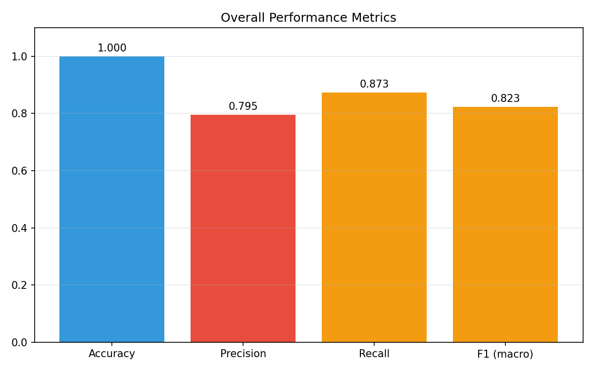
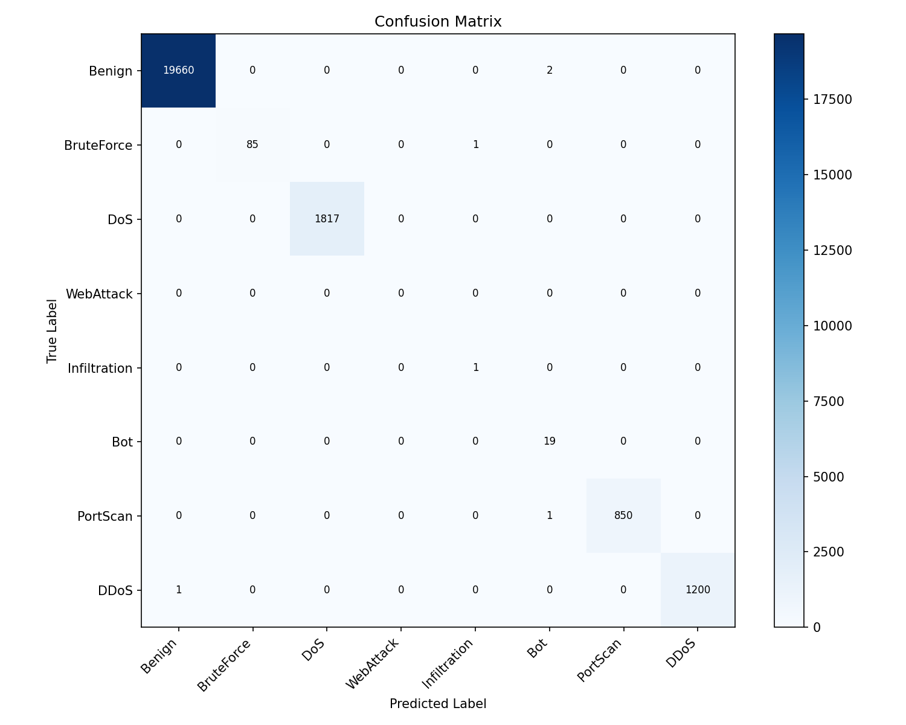
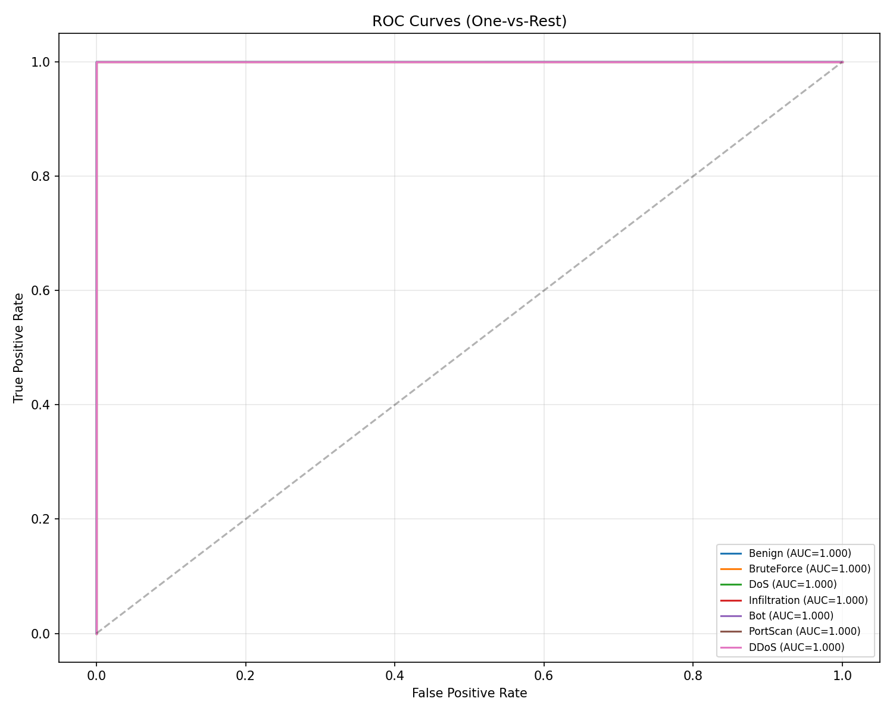
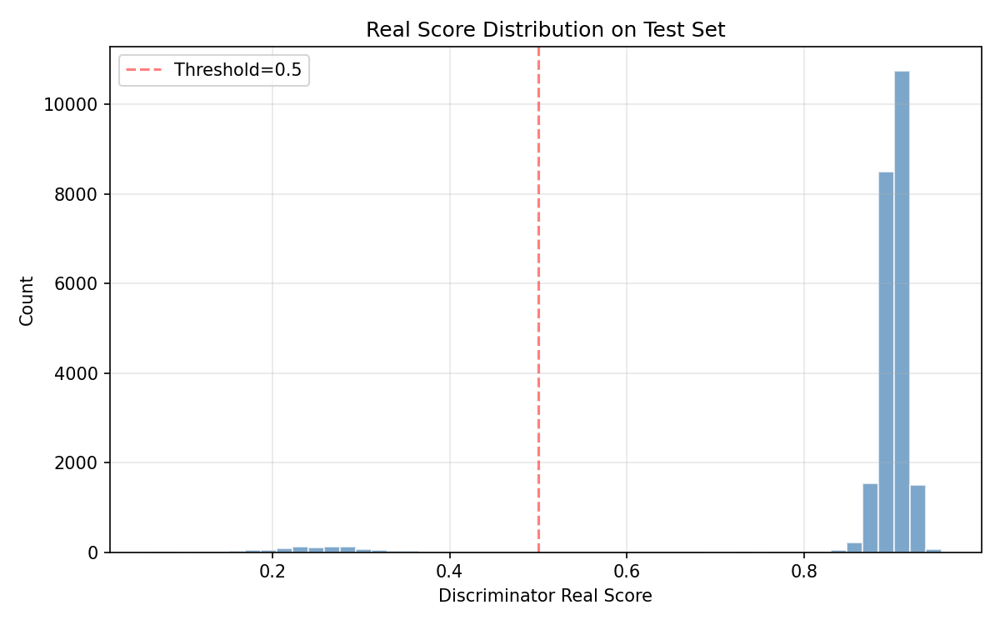

模型: TransEC-GAN (Transformer Encoder + GAN) | 数据集: CICIDS2017 | 测试样本: 23,637




precision recall f1-score support
Benign 0.9999 0.9999 0.9999 19662
BruteForce 1.0000 0.9884 0.9942 86
DoS 1.0000 1.0000 1.0000 1817
WebAttack 0.0000 0.0000 0.0000 0
Infiltration 0.5000 1.0000 0.6667 1
Bot 0.8636 1.0000 0.9268 19
PortScan 1.0000 0.9988 0.9994 851
DDoS 1.0000 0.9992 0.9996 1201
accuracy 0.9998 23637
macro avg 0.7954 0.8733 0.8233 23637
weighted avg 0.9998 0.9998 0.9998 23637
| 类别 | 准确率 | 样本数 |
|---|---|---|
| Benign | 99.99% | 19,662 |
| BruteForce | 98.84% | 86 |
| DoS | 100.00% | 1,817 |
| Infiltration | 100.00% | 1 |
| Bot | 100.00% | 19 |
| PortScan | 99.88% | 851 |
| DDoS | 99.92% | 1,201 |